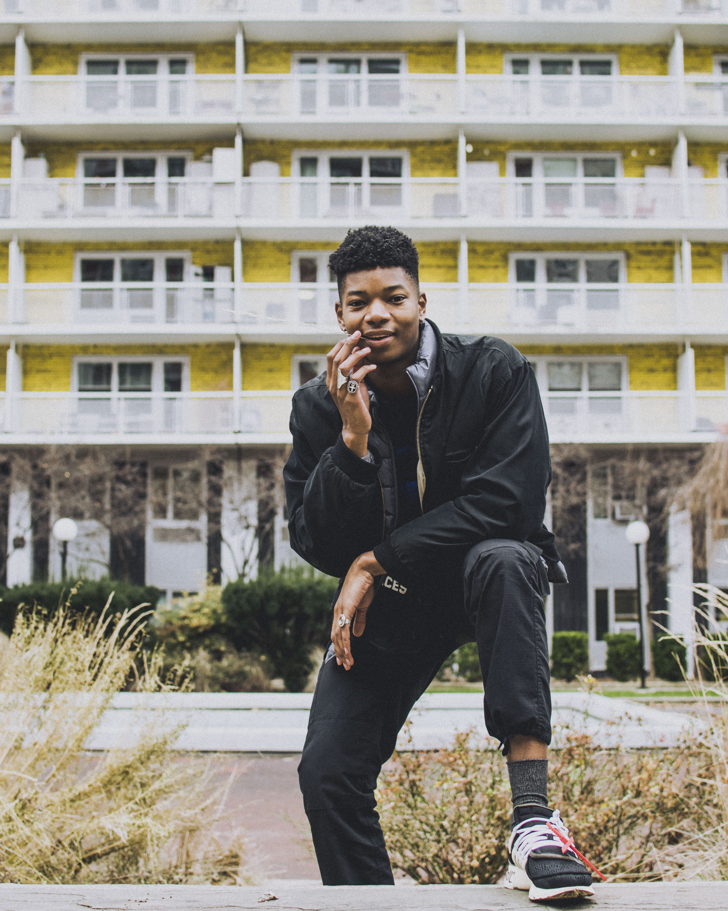

About

Isaiah Spicer is a 21 year old photograher, designer, and Computer Science student at Temple University. He has interned in the past for Twitter as a software engineer and done work a web designer for Temple's ACM and NSBE chapters. His photography work primarily consists of portraiture. He enjoys working with colors and directing people in various settings. Isaiah has done work for Temple News, Babel Poetry Collective, Only Elite Matters, and has made a digital magazine centered around artists entitlted Curate. Isaiah is currently a Code2040 fellow and a design officer for TUDev. He is currently looking to do more freelance photography and design work.